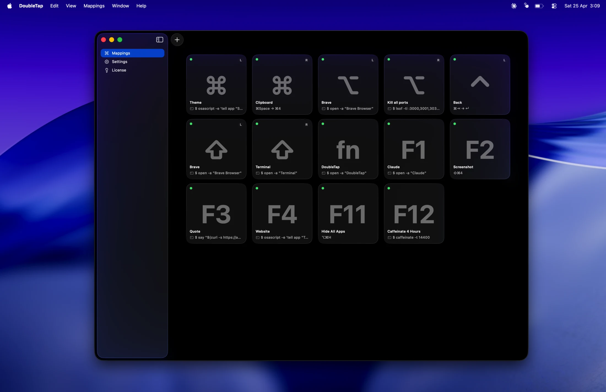

Launch apps
⌥⌥ opens Spotlight. ⌃⌃ opens Terminal. Whatever lived in your Dock is now keyboard-only.
Turn ⌘ ⌥ ⌃ ⇧ fn and the F-row into instant triggers — for apps, Shortcuts, shell commands, and keystroke chains.
14-day trial · No card · Zero telemetry
Click any modifier key or F-key to hear it fire
No new shortcuts to memorize — only the keys you already use, with a second job.
Choose any modifier — ⌘ ⌥ ⌃ ⇧ fn — or any F-key. Left and right count separately, up to twenty unique triggers.
Open an app, run a Shortcut, fire a multi-step keystroke chain, or execute a shell command. One action per trigger — no modes, no conflicts.
Same key, twice, within your tap window. DoubleTap fires instantly. A subtle HUD confirms it — or stay silent, your choice.
Five things DoubleTap does well. Mix and match — yours will look different.
⌥⌥ opens Spotlight. ⌃⌃ opens Terminal. Whatever lived in your Dock is now keyboard-only.
Fire any macOS Shortcut on a double-tap. Toggle Focus, start a timer, post a status — without lifting your hands.
Any shell command. Open a URL, kick off a deploy, sync your dotfiles. Runs quietly in the background.
Up to three keystrokes in a row, each with its own modifiers. Select all → Copy → Switch window. One gesture.
Standard F-keys and media keys, both on, no trip to System Settings. Backlight too — even on Apple Silicon.
Small, native, and quiet. Nothing on the screen until you ask.
Twenty distinct triggers across left/right modifiers and F1–F12. Side-aware, conflict-free, with adjustable tap windows.
Chain up to three keystrokes per trigger, each with their own modifiers. Repetitive macros become a single double-tap.
Glass, Notch, or silent — pick the confirmation style that fits your Mac. Stays out of the way until something fires.
Left-click toggles DoubleTap on and off. Right-click opens the menu. Behaves like every other Mac menu bar app.
A thirty-second tutorial and the actual settings window. That's the whole interface.

Add your first trigger — pick a key, pick an action, double-tap. Thirty seconds, start to finish.
Runs entirely on your Mac. No tracking, no cloud, no account.
No analytics, no tracking, no phone-home. The only network calls are license verification and update checks.
Your triggers and actions live in your Application Support folder. Nothing syncs anywhere unless you set it up.
Every build is Developer ID signed, notarized by Apple, and stapled. Nothing for Gatekeeper to flag.
Two macOS permissions — Accessibility and Input Monitoring — the standard for any keyboard utility. Status is always visible in the menu bar.
Fourteen days to see if it fits. Nine dollars if it does. No subscription, ever.
No. DoubleTap watches only for double-taps on the modifier keys and F-keys you explicitly enable. It never reads, stores, or transmits the rest of your typing. Zero telemetry, zero analytics.
macOS requires Accessibility for sending synthetic keystrokes (so DoubleTap can fire a shortcut for you) and Input Monitoring for detecting key presses. These are the standard permissions every keyboard utility needs. Status is always visible in the menu bar.
Yes. Everything runs locally on your Mac. The only network activity is license verification (with a 30-day offline grace) and once-a-day update checks — both can be deferred.
No. One-time purchase from $9. Every future update is included.
Full functionality during the 14 days — no nags, no lockouts. From day 10 onward, a gentle daily reminder. On day 14, a pop-up invites you to buy a license. After expiration the app still launches; only mappings stop firing until you activate.
A DMG and a license key — that's the whole flow.